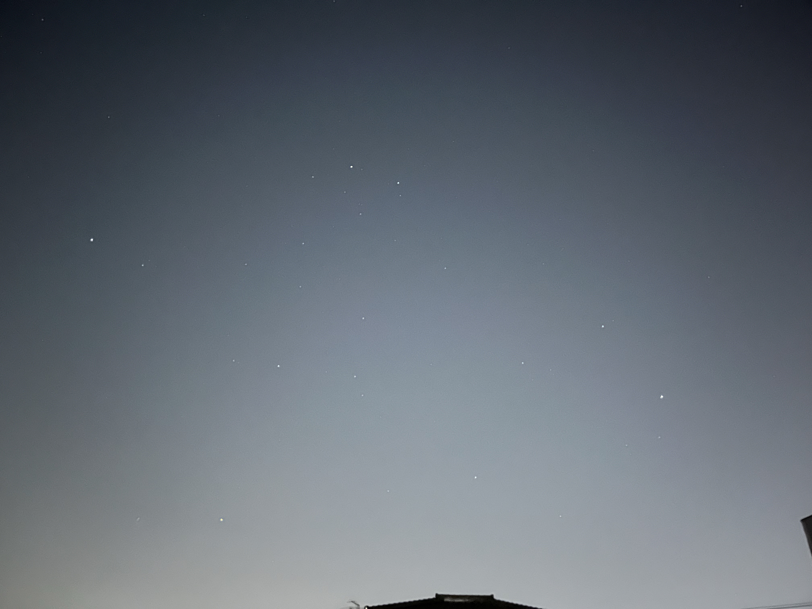
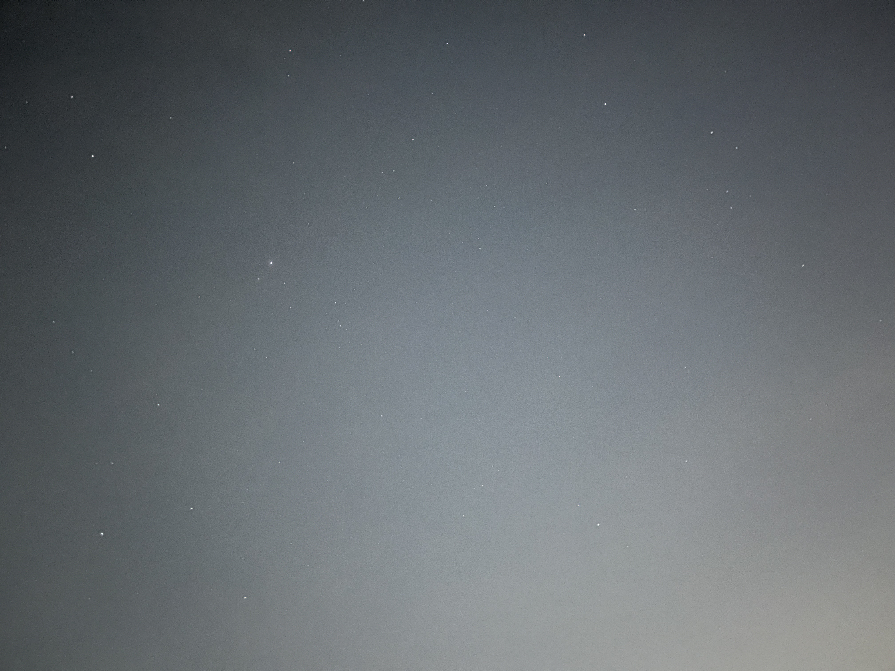

5月の星空
全天で一番明るく見える恒星「シリウス」は5月下旬には見えなくなります。
それでもカペラ, ポルックス, プロキオンは6月初旬まで見えていて、華やかな冬の星座の1等星たちの名残を楽しめます。

春の星座の1等星はアルクトゥルス(うしかい座), スピカ(おとめ座), レグルス(しし座)です。
アルクトゥルス(うしかい座), スピカ(おとめ座), デネボラ(しし座)は春の大三角と呼ばれます。

真夜中には夏の大三角が見えてきます。

明け方には土星と火星が見えます

5月の活動
宇宙科学シリーズ : 七夕のお願いはいつおりひめ星に届くか
みなさんは七夕の時に短冊で願い事を書いたことがありますか？
もし願い事をしたとして、そのお願いはいつ届くと思いますか・・・？
現在の科学の考え方ではどちらもアインシュタインによって考えられました。
電波 : 25年
おりひめ星(ベガ)は地球から電波が25年かかって届くところにあります(25光年)。
アインシュタインの相対性理論では、これより速く届けることはできないことが知られています。
そのため、願いが届くのは25年後になっています。
量子テレポーテーション : 偶然に一瞬で届くこともありえる
この考え方は1990年代前半に正しいと認められました(EPR相関と言われています)。
ただし、「EPR相関があっても届ける側と受け取る側で偶然同じ動作をしていないと情報は届かない」とされています。
工作シリーズ : プラネタリウムの仕組み
豊明中学校に設置されていたプラネタリウムの投影機
画像処理シリーズ : デジタル画像処理
こと座, わし座, はくちょう座, や座, こぎつね座, いるか座

豊明市内では暗い星を探すのは大変ですが、PythonとOpenCVを使うことで街明かりの効果を比較的簡単に消すことができます。
最近のニュースから
日本人宇宙飛行士2028年に月面着陸!?
北海道・東北・北陸でもオーロラが観測される
生成AIで調べてみました:
太陽フレアについての説明